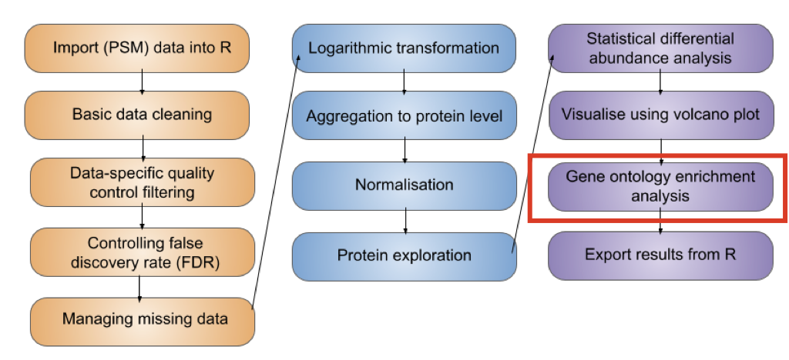
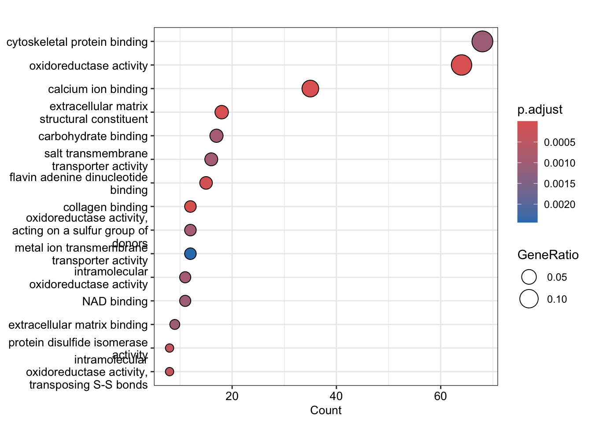

7 Biological interpretation
Learning Objectives
- Be aware of different analyses that can be done to gain a biological understanding of expression proteomics results
- Understand the concept of Gene Ontology (GO) enrichment analyses
- Complete GO enrichment analyses using the
enrichGOfunction from theclusterProfilerpackage
7.1 Adding metadata to our results using dplyr
Before we can look any further into the biological meaning of any protein abundance changes we need to extract these proteins from our overall results. It is also useful to re-add information about the master protein descriptions since this is lost in the output of limma analysis.
It is important to note that the results table we have generated from limma is not the same as the input data. In order to add information from our original data e.g., from the rowData such as the Master.Protein.Descriptions we must match the protein names between them.
To do this, let’s extract information the Master.Protein.Descriptions from the original data we have created called all_proteins.
Recall that all_protiens is SummarizedExperiment object,
all_proteinsclass: SummarizedExperiment
dim: 3825 9
metadata(0):
assays(2): assay aggcounts
rownames(3825): A0A0B4J2D5 A0A2R8Y4L2 ... Q9Y6X9 Q9Y6Y8
rowData names(21): Checked Tags ... Protein.FDR.Confidence .n
colnames(9): M_1 M_2 ... DS_2 DS_3
colData names(4): sample rep condition tagWe wish to extract information from the rowData regarding the Master.Protein.Descriptions,
## Add master protein descriptions back
protein_info <- all_proteins %>%
rowData() %>%
as_tibble() %>%
select(protein = Master.Protein.Accessions,
protein_description = Master.Protein.Descriptions)
protein_info %>% head()# A tibble: 6 × 2
protein protein_description
<chr> <chr>
1 A0A0B4J2D5 Putative glutamine amidotransferase-like class 1 domain-containing…
2 A0A2R8Y4L2 Heterogeneous nuclear ribonucleoprotein A1-like 3 OS=Homo sapiens …
3 A0AVT1 Ubiquitin-like modifier-activating enzyme 6 OS=Homo sapiens OX=960…
4 A0MZ66 Shootin-1 OS=Homo sapiens OX=9606 GN=SHTN1 PE=1 SV=4
5 A1L0T0 2-hydroxyacyl-CoA lyase 2 OS=Homo sapiens OX=9606 GN=ILVBL PE=1 SV…
6 A1X283 SH3 and PX domain-containing protein 2B OS=Homo sapiens OX=9606 GN…Note, we also extract the Master.Protein.Accessions column so we can use this to match to the protein column in our limma results.
Now we can use the left_join function from dplyr to match the protein descriptions to the protein IDs,
M_Desynch_results <- M_Desynch_results %>% left_join(protein_info, by = "protein")
# Verify
M_Desynch_results# A tibble: 3,825 × 12
protein logFC CI.L CI.R AveExpr t P.Value adj.P.Val B direction
<chr> <dbl> <dbl> <dbl> <dbl> <dbl> <dbl> <dbl> <dbl> <chr>
1 P31350 -3.05 -3.33 -2.76 -0.576 -24.0 2.24e-10 8.55e-7 14.2 down
2 O60732 -2.06 -2.27 -1.84 0.355 -21.3 7.48e-10 1.43e-6 13.2 down
3 O43583 -1.35 -1.50 -1.20 0.380 -20.3 1.14e- 9 1.46e-6 12.8 down
4 O00622 1.28 1.13 1.43 -0.378 19.2 2.03e- 9 1.94e-6 12.2 up
5 O43663 1.07 0.930 1.21 0.155 16.8 7.74e- 9 4.67e-6 11.0 up
6 Q96PU5 -1.58 -1.79 -1.37 -0.160 -16.6 9.03e- 9 4.67e-6 10.8 down
7 P11802 -1.16 -1.32 -1.01 0.730 -16.5 9.35e- 9 4.67e-6 10.8 down
8 P53350 0.906 0.782 1.03 0.0202 16.3 1.04e- 8 4.67e-6 10.7 up
9 Q9NQS7 1.10 0.947 1.25 -0.286 16.1 1.13e- 8 4.67e-6 10.6 up
10 Q14692 -1.61 -1.83 -1.39 -0.295 -16.1 1.22e- 8 4.67e-6 10.5 down
# ℹ 3,815 more rows
# ℹ 2 more variables: significance <chr>, protein_description <chr>
Manipulating data with
dplyr and tidyverse
There is lots of information online about getting started with dplyr and using the tidyverse. We really like this lesson from the Data Carpentry if you are new to the tidyverse.
7.2 Subset differentially abundant proteins
Let’s subset our results and only keep proteins which have been flagged as exhibiting significant abundance changes,
7.3 Biological interpretation of differentially abundant proteins
Our statistical analyses provided us with a list of proteins that are present with significantly different abundances between different stages of the cell cycle. We can get an initial idea about what these proteins are and do by looking at the protein descriptions.
## Look at descriptions of proteins upregulated in M relative to deysnchronized cells
sig_up %>%
pull(protein_description) %>%
head()[1] "CCN family member 1 OS=Homo sapiens OX=9606 GN=CCN1 PE=1 SV=1"
[2] "Protein regulator of cytokinesis 1 OS=Homo sapiens OX=9606 GN=PRC1 PE=1 SV=2"
[3] "Serine/threonine-protein kinase PLK1 OS=Homo sapiens OX=9606 GN=PLK1 PE=1 SV=1"
[4] "Inner centromere protein OS=Homo sapiens OX=9606 GN=INCENP PE=1 SV=3"
[5] "Tropomyosin alpha-1 chain OS=Homo sapiens OX=9606 GN=TPM1 PE=1 SV=2"
[6] "Centromere protein F OS=Homo sapiens OX=9606 GN=CENPF PE=1 SV=3" Whilst we may recognise some of the changing proteins, this might be the first time that we are coming across others. Moreover, some protein descriptions contain useful information, but this is very limited. We still want to find out more about the biological role of the statistically significant proteins so that we can infer the potential effects of their abundance changes.
There are many functional analyses that could be done on the proteins with differential abundance:
- Investigate the biological pathways that the proteins function within (KEGG etc.)
- Identify potential interacting partners (IntAct, STRING)
- Determine the subcellular localisation in which the changing proteins are found
- Understand the co-regulation of their mRNAs (Expression Atlas)
- Compare our changing proteins to those previously identified in other proteomic studies of the cell cycle
7.3.1 Gene Ontology (GO) enrichment analysis
One of the common methods used to probe the biological relevance of proteins with significant changes in abundance between conditions is to carry out Gene Ontology (GO) enrichment, or over-representation, analysis.
The Gene Ontology consortium have defined a set of hierarchical descriptions to be assigned to genes and their resulting proteins. These descriptions are split into three categories: cellular components (CC), biological processes (BP) and molecular function (MF). The idea is to provide information about a protein’s subcellular localisation, functionality and which processes it contributes to within the cell. Hence, the overarching aim of GO enrichment analysis is to answer the question:
“Given a list of proteins found to be differentially abundant in my phenotype of interest, what are the cellular components, molecular functions and biological processes involved in this phenotype?”.
Unfortunately, just looking at the GO terms associated with our differentially abundant proteins is insufficient to draw any solid conclusions. For example, if we find that 157.6666667 of the 473 proteins significantly upregulated in M phase are annotated with the GO term “kinase activity”, it may seem intuitive to conclude that this biological process is important for the M-phase phenotype. However, if 90% of all proteins in the cell were kinases (an extreme example), then we might expect to discover a high representation of the “kinase activity” GO term in any protein list we end up with.
This leads us to the concept of an over-representation analysis. We wish to ask whether any GO terms are over-represented (i.e., present at a higher frequency than expected by chance) in our lists of differentially abundant proteins. In other words, we need to know how many proteins with a GO term could have shown differential abundance in our experiment vs. how many proteins with this GO term did show differential abundance in our experiment.
We are going to use a function in R called enrichGO from the the clusterProfiler Yu et al. (2012) Bioconductor R package to perform GO enrichment analysis. The package vignette can be found here. and full tutorials for using the package here
Annotation packages in Bioconductor
The enrichGO function uses the org.Hs.eg.db Bioconductor package that has genome wide annotation for human, primarily based on mapping using Entrez Gene identifiers. It also uses the GO.db package which is a set of annotation maps describing the entire Gene Ontology assembled using data from GO.
In the next code chunk we call the enrichGO function,
ego_up <- enrichGO(gene = sig_up$protein, # list of up proteins
universe = M_Desynch_results$protein, # all proteins
OrgDb = org.Hs.eg.db, # database to query
keyType = "UNIPROT", # protein ID encoding
pvalueCutoff = 0.05,
qvalueCutoff = 0.05,
readable = TRUE)Let’s take a look at the output.
ego_up#
# over-representation test
#
#...@organism Homo sapiens
#...@ontology MF
#...@keytype UNIPROT
#...@gene chr [1:473] "O00622" "O43663" "P53350" "Q9NQS7" "P09493" "P49454" "O95235" ...
#...pvalues adjusted by 'BH' with cutoff <0.05
#...70 enriched terms found
'data.frame': 70 obs. of 9 variables:
$ ID : chr "GO:0005201" "GO:0016491" "GO:0005509" "GO:0005518" ...
$ Description: chr "extracellular matrix structural constituent" "oxidoreductase activity" "calcium ion binding" "collagen binding" ...
$ GeneRatio : chr "18/464" "64/464" "35/464" "12/464" ...
$ BgRatio : chr "24/3739" "225/3739" "103/3739" "18/3739" ...
$ pvalue : num 2.37e-12 1.94e-11 6.61e-09 1.07e-07 9.24e-07 ...
$ p.adjust : num 1.06e-09 4.34e-09 9.86e-07 1.20e-05 8.26e-05 ...
$ qvalue : num 8.60e-10 3.52e-09 7.98e-07 9.71e-06 6.69e-05 ...
$ geneID : chr "CCN1/SPARC/COL12A1/COL23A1/TNC/THBS1/FN1/HAPLN1/EDIL3/LAMC2/COL6A3/LAMC1/EFEMP1/COL4A2/AGRN/LAMA5/LAMB1/COL1A1" "PDIA4/HIBADH/P4HA2/P4HA1/PDIA3/P4HB/TXNDC5/P3H1/ACADVL/POR/ALDH18A1/PDIA6/HSD17B4/HADHA/TXNRD2/MTHFD2/LOXL2/ALD"| __truncated__ "SPARC/FSTL1/THBS1/HSPA5/SPTAN1/HSP90B1/EDIL3/CALR/NOTCH2/FKBP9/NUCB1/FKBP10/PRKCSH/LOXL2/IQGAP1/TENM2/CANX/CREL"| __truncated__ "SPARC/MRC2/THBS1/FN1/P3H1/ITGB1/SERPINH1/PPIB/ITGA3/CRTAP/CD44/CTSB" ...
$ Count : int 18 64 35 12 15 8 8 16 11 12 ...
#...Citation
T Wu, E Hu, S Xu, M Chen, P Guo, Z Dai, T Feng, L Zhou, W Tang, L Zhan, X Fu, S Liu, X Bo, and G Yu.
clusterProfiler 4.0: A universal enrichment tool for interpreting omics data.
The Innovation. 2021, 2(3):100141 The output of the enrichGO function is an object of class enrichResult that contains the ID and Description of all enriched GO terms. There is also information about which geneIDs from our significantly upregulated proteins are annotated with each of the enriched GO terms. Let’s take a look at the descriptions.
ego_up$Description [1] "extracellular matrix structural constituent"
[2] "oxidoreductase activity"
[3] "calcium ion binding"
[4] "collagen binding"
[5] "flavin adenine dinucleotide binding"
[6] "protein disulfide isomerase activity"
[7] "intramolecular oxidoreductase activity, transposing S-S bonds"
[8] "salt transmembrane transporter activity"
[9] "intramolecular oxidoreductase activity"
[10] "oxidoreductase activity, acting on a sulfur group of donors"
[11] "carbohydrate binding"
[12] "NAD binding"
[13] "cytoskeletal protein binding"
[14] "extracellular matrix binding"
[15] "metal ion transmembrane transporter activity"
[16] "signaling receptor activity"
[17] "molecular transducer activity"
[18] "glycosaminoglycan binding"
[19] "virus receptor activity"
[20] "exogenous protein binding"
[21] "isomerase activity"
[22] "disulfide oxidoreductase activity"
[23] "protein-disulfide reductase activity"
[24] "carboxylic acid binding"
[25] "organic acid binding"
[26] "actin binding"
[27] "transporter activity"
[28] "organic anion transmembrane transporter activity"
[29] "integrin binding"
[30] "monosaccharide binding"
[31] "FAD binding"
[32] "microtubule binding"
[33] "heparin binding"
[34] "secondary active transmembrane transporter activity"
[35] "signaling receptor binding"
[36] "transmembrane transporter activity"
[37] "inorganic molecular entity transmembrane transporter activity"
[38] "oxidoreductase activity, acting on the aldehyde or oxo group of donors, NAD or NADP as acceptor"
[39] "sulfur compound binding"
[40] "misfolded protein binding"
[41] "oxidoreductase activity, acting on the aldehyde or oxo group of donors"
[42] "monoatomic cation transmembrane transporter activity"
[43] "oxidoreductase activity, acting on CH-OH group of donors"
[44] "active transmembrane transporter activity"
[45] "inorganic cation transmembrane transporter activity"
[46] "laminin binding"
[47] "2-oxoglutarate-dependent dioxygenase activity"
[48] "oxidoreductase activity, acting on paired donors, with incorporation or reduction of molecular oxygen"
[49] "active monoatomic ion transmembrane transporter activity"
[50] "amide binding"
[51] "tubulin binding"
[52] "vitamin binding"
[53] "electron transfer activity"
[54] "low-density lipoprotein particle receptor binding"
[55] "lipoprotein particle receptor binding"
[56] "monoatomic ion transmembrane transporter activity"
[57] "dioxygenase activity"
[58] "oxidoreductase activity, acting on the CH-OH group of donors, NAD or NADP as acceptor"
[59] "organic acid transmembrane transporter activity"
[60] "carboxylic acid transmembrane transporter activity"
[61] "fibronectin binding"
[62] "cargo receptor activity"
[63] "proteoglycan binding"
[64] "calcium ion transmembrane transporter activity"
[65] "cell adhesion molecule binding"
[66] "peptide binding"
[67] "chaperone binding"
[68] "microtubule motor activity"
[69] "lyase activity"
[70] "amino acid transmembrane transporter activity" There is a long list because of the hierarchical nature of GO terms. The results of GO enrichment analysis can be visualised in many different ways. For a full overview of GO enrichment visualisation tools see Visualization of functional enrichment result.
dotplot(ego_up,
x = "Count",
showCategory = 15,
font.size = 10,
color = "p.adjust")
Key Points
- Gene ontology (GO) terms described the molecular function (MF), biological processes (BP) and cellular component (CC) of proteins.
- GO terms are hierarchical and generic. They do not relate to specific biological systems e.g., cell type or condition.
- GO enrichment analysis aims to identify GO terms that are present in a list of proteins of interest (foreground) at a higher frequency than expected by chance based on their frequency in a background list of proteins (universe). The universe should be a list of all proteins included identified and quantified in your experiment.
- The
enrichGOfunction from theclusterProfilerpackage provides a convenient way to carry out reproducible GO enrichment analysis in R.
References
Yu, Guangchuang, Li-Gen Wang, Yanyan Han, and Qing-Yu He. 2012. “clusterProfiler: An r Package for Comparing Biological Themes Among Gene Clusters.” OMICS: A Journal of Integrative Biology 16 (5): 284–87. https://doi.org/10.1089/omi.2011.0118.